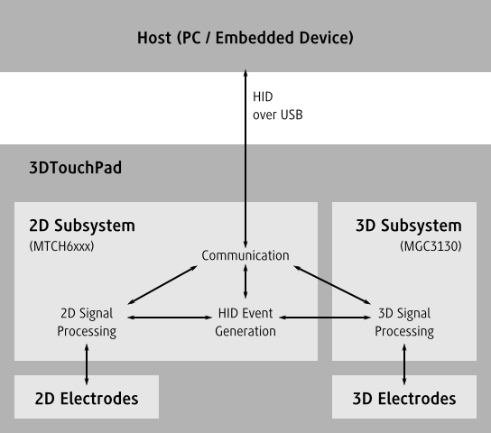

| First Steps | |
| Project Setup | |
| Based on Applications | The easiest way to write a new application is to copy one of the examples and adapt it to the application’s needs. |
| Based on Templates | An alternative to the applications are the templates. |
| Start from scratch | It is also possible to start a project from scratch or to add HMI-device support directly to an existing application. |
| Connection handling | |
| Example | |
| hmi_t instance | The HMI API is reentrant with almost all functions requiring a pointer to an hmi_t-instance. |
| Connecting to device | Connecting to the device gets done by calling hmi_open. |
| Startup Configuration | Depending on the startup configuration of the device it might be necessary to change some parameters for the applications use case. |
| 3DTouchPad Usage | The 3DTouchPad could be configured to disable most of its features or to not communicate the result of its processing. |
| RTC | Depending on the use case of the application there might be other parameters that have to be set to get the desired behavior. |
| Based on Applications | The easiest way to write a new application is to copy one of the examples and adapt it to the application’s needs. |
| Based on Templates | An alternative to the applications are the templates. |
| Start from scratch | It is also possible to start a project from scratch or to add HMI-device support directly to an existing application. |
The easiest way to write a new application is to copy one of the examples and adapt it to the application’s needs. Good candidates for starting the development are the stream examples (see Stream Example).
An alternative to the applications are the templates. Unlike the examples the templates also contain commented alternatives.
The page Templates contains more details on how to use the templates.
It is also possible to start a project from scratch or to add HMI-device support directly to an existing application.
Windows applications can directly use the installed binaries. Depending on whether the application should link dynamically or statically against the HMI API one has to link the applications against api/lib/mchp_hmi.lib or api/lib-static/mchp_hmi.lib.
The installer of the 3DTouchPad SDK adds the api directory as the MCHP_HMI_API_PATH environment variable (After installation of the 3DTouchPad SDK one restart is required before applications can use it). By adding %MCHP_HMI_API_PATH%/lib or %MCHP_HMI_API_PATH%/lib-static (in case of static linking) as a library directory one could simply add mchp_hmi.lib as a dependency to the linker.
The include path for the API headers could be added as %MCHP_HMI_API_PATH%/include to the compiler configuration.
After this setup the API could be used in source files.
The single most simple use of the SDK is the following:
#include <hmi_api.h>
#include <stdio.h>
int main()
{
printf("Using the 3DTouchPad SDK %s\n", hmi_version_str());
return 0;
}Applications always include hmi_api.h. hmi_api.h in turn includes the other headers depending on the settings. Including one of those headers directly will likely result in compiler errors.
| Example | |
| hmi_t instance | The HMI API is reentrant with almost all functions requiring a pointer to an hmi_t-instance. |
| Connecting to device | Connecting to the device gets done by calling hmi_open. |
#include <hmi_api.h>
#include <stdio.h>
int main()
{
// Create hmi_t instance
hmi_t *hmi = hmi_create();
if(!hmi) {
fprintf(stderr, "Could not allocate hmi_t instance\n");
return -1;
}
// Initialize hmi
hmi_initialize(hmi);
// Connect to device
if(hmi_open(hmi) != HMI_NO_ERROR) {
fprintf(stderr, "Could not connect to HMI device\n");
return -1;
}
printf("Succesfully connected to HMI device\n");
// Use hmi...
// Disconnect from device
hmi_close(hmi);
// Cleanup
hmi_cleanup(hmi);
// And finally freeing the hmi_t instance
hmi_free(hmi);
return 0;
}The HMI API is reentrant with almost all functions requiring a pointer to an hmi_t-instance. This instance can be created with hmi_create and has to be freed later with hmi_free.
Instances have to be initialized before usage with hmi_initialize. Once they are no longer needed they have to be cleaned up before freeing with hmi_cleanup.
hmi_t *hmi = hmi_create();
if(hmi == NULL) {
// TODO Handle error
}
hmi_initialize(hmi);
// Use hmi...
hmi_cleanup(hmi);
hmi_free(hmi);Connecting to the device gets done by calling hmi_open. This connection is later released with hmi_close.
Depending on the actual IO-implementation there might be additional functions that could be called to configure the connection before hmi_open. One such function is hmi_hid_set_details.
The 3DTouchPad could be configured to disable most of its features or to not communicate the result of its processing. This allows to reduce the required bandwidth and to do adaptions to the behavior of the device.
The following is an abstract representation of the individual features of the device during its normal operation:
The use of the 2D and 3D sensors is exclusive. Either the 2D or 3D subsystem could be active at any time with a handover occuring when the device gets touched or the touch gets released.
During its normal operation the 3DTouchPad occurs to the host as a device with the Vendor ID 0x4D8 and the Product ID 0x9D3 with two interfaces. The first interface is a HID conform device that acts as both mouse and keyboard that the system communicate directly with. The other interface is a custom HID conform device. This second interface is the one which the SDK communicates with.
There are two important parameters that control to what degree the individual features are active and communicate with the host.
The parameter hmi2d_param_operation_mode controls to what degree the subsystems are enabled. There are four different operation modes that could be set with hmi2d_set_operation_mode:
| 2D Only | Only the 2D subsystem is active and no handover to 3D subsystem occurs. |
| 3D Only | The 3D subsystem is active and the 2D subsystem only interprets the data from the 3D system to emulate the mouse and keyboard device. |
| Mixed Mode | Both the 2D and the 3D subsystems are active and a handover from 3D to 2D occurs when the user touches the touch pad and vice versa. |
| Bridge Mode | Bridge mode is only relevant for updating the 3D subsystem firmware. Only the 3D subsystem is active and the 2D system is limited to forwarding the communication between the 3D system and the host if this is allowed by the hmi2d_param_com_mask. |
| Mode | 2D Signal Processing | 3D Signal Processing | HID Event Generation | Value |
|---|---|---|---|---|
| Mixed Mode | Enabled | Enabled | Enabled | hmi2d_mixed_mode |
| 2D Only | Always Active | Disabled | Enabled | hmi2d_2d_mode |
| 3D Only | Disabled | Always Active | Enabled | hmi2d_3d_mode |
| Bridge Mode | Disabled | Enabled | Disabled | hmi2d_bridge_mode |
The parameter hmi2d_param_com_mask controls what communication is done by the 2D subsystem. It allows fine grained control over the messages sent by the 2D signal processing and HID Event Generator. It also controls whether communication with the 3D subsystem is enabled. Independently of the other parameters not setting hmi2d_com_3d_messages will result in communication between host and 3D subsystem being impossible.
To control which messages are sent by the 3D subsytem it provides its own parameters hmi3d_param_dataOutputEnableMask, hmi3d_param_dataOutputLockMask and hmi3d_param_dataOutputRequestMask. Also the parameter hmi2d_param_active_mask controls which of the 2D features is enabled.
Depending on the use case of the application there might be other parameters that have to be set to get the desired behavior. Those parameters and the related functions are listed on the 3D Real Time Control and 2D Real Time Control pages and together with the introduction of the related features.
Opens a connection to the physical device and associates it with hmi that was already initialized with hmi_initialize.
HMI_API int CDECL hmi_open( hmi_t * hmi )
Creates a new hmi_t-instance if the API is compatible.
HMI_API hmi_t * CDECL hmi_create_( int api_rev )
Releases hmi that was aquired with hmi_create.
HMI_API void CDECL hmi_free( hmi_t * hmi )
Initializes hmi for further use.
HMI_API void CDECL hmi_initialize( hmi_t * hmi )
Releases resources that were aquired by hmi_initialize.
HMI_API void CDECL hmi_cleanup( hmi_t * hmi )
Closes the connection to the device associated with hmi that was established with hmi_open.
HMI_API void CDECL hmi_close( hmi_t * hmi )
Sets the Vendor ID, Product ID, Report ID and Interface that is used by the HID connection.
HMI_API void CDECL hmi_hid_set_details( hmi_t * hmi, int vendor_id, int product_id, int report_id, int iface )
Sets operation mode for 2D subsystem.
HMI_API int CDECL hmi2d_set_operation_mode( hmi_t * hmi, hmi2d_operation_mode_t mode )